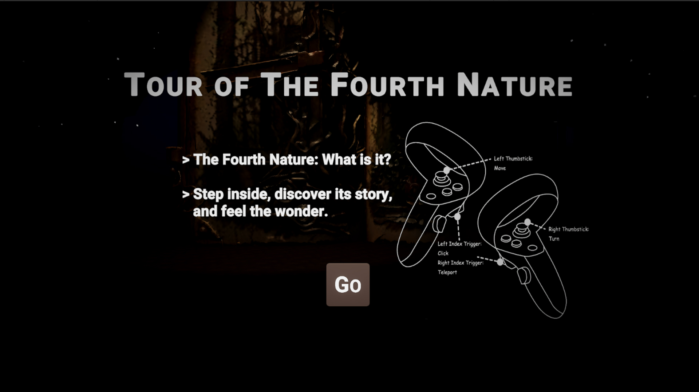
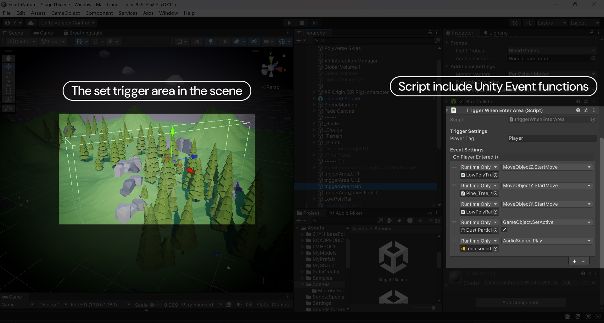
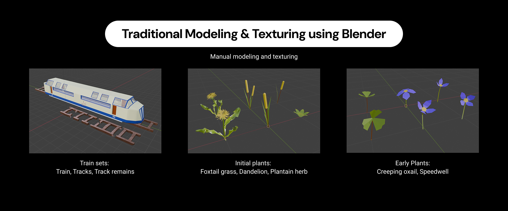

「第四自然 The Fourth Nature」是人类产业退场之后自发生长的野性生态——一个抽象、靠定义难以想象出来的概念。我在论文项目中没有去以叙述解释这个概念，而是把它建成了一个可以走进去的地方：在为 Meta Quest 3 头显开发的 VR 体验中，参与者以昆虫尺度视角穿过松林，看着一条铁路切入其中，多年后回到原地，先锋植物已经重新占据轨道。项目在设计开发前后经过8位参与者测试该版本，概念被理解——这也就是结论：通过VR 体验，能把一个抽象的生态概念，变成更多人能感受得到的东西。
00结论摘要
The Fourth Nature Tour 是我的个人硕士论文项目：一段把「第四自然」编排成旅程、而不是去描述它的 VR 体验。翻开的一本书开启叙事，灯光把体验者引向传送门，两个依次展开的阶段对照「工业入侵」与「生态演替」。它的研究贡献在故事之下——概念解构 → 5W1H 设计策略 → 叙事 + 场景 + VR交互原型 → AI 辅助生产 → 用户测试迭代——并在可运行的 Quest 3 版本上完成了端到端验证。
- VR交互体验将抽象概念数字化的价值在于公众可达性；项目将抽象的生态学原理转化为可触摸、可探索的叙事，让人们去“共同感知”城市生态再生，而非仅仅阅读它。
- 设计研究基于5W1H 框架（Lasswell，经扩展），覆盖内容、目的、受众、场景、载体与方法——可作为其他跨学科生态概念迁移使用的模板。
- 技术应用服务于设计概念。Unity URP + Meta Quest 3 提供沉浸式临场感；C# 脚本、Unity Events 与 Shader Graph 构建出可控、动态的交互系统；低多边形资产在独立 VR 硬件上平衡了性能、辨识度与迭代速度。
- AI 辅助加入工作流程，而非概念。AI 辅助分镜、实验性 3D 建模、音效生成与辅助编程（Cursor、GitHub Copilot）各自压缩了一个生产环节，并扩展一定的创造性——但每一份产出都要通过人为决策。总结工作流与可复用的结构化提示词（角色 / 需求 / 输出 + 参考图），而非仅限于具体生成物。
| 形式 | VR虚拟现实体验 — Meta Quest 3 头显，Unity URP，独立运行版本 |
| 时间 | 2025.09 – 2026.02 |
| 背景 | 硕士毕业论文项目（个人完成） |
| 主要工作 | 概念研究 · 叙事与交互设计 · Unity / C# 开发 · AI 辅助生产 · 用户测试与迭代 |
| 设计框架 | 5W1H 策略（Lasswell）→ 用户旅程与分镜 → VR 原型 |
| 交付物 | 概念研究 · 5W1H 设计策略 · 分镜 · 三套低多边形 VR 场景（初始 + 阶段一 + 阶段二）· C# 交互系统 · Shader Graph 特效 · AI 辅助资产与音效管线 · 可复用提示词与工作流· 以伦理为先的用户测试迭代 |
01背景研究
学科：生态概念研究 & VR 媒介分析研究首先夯实「概念」与「媒介」。“第四自然”指人为、自发生长的城市野地——生态潜力高却难以被感知。选择虚拟现实作为载体有两点理由：其沉浸式三维环境（替代现实 + 超越现实）让体验者栖居于超越物理限制的世界；其具身、多模态的交互把旁观者变成行动者。一项案例对比分析——奥赛博物馆的 La Palette de Van Gogh（线性、人类中心式复原）与 Marshmallow Laser Feast 的 In the Eyes of the Animal（探索式、非人类中心式感知）——提炼出项目有意融合的两种策略：1.用叙事引导保证清晰度；2.用视角切换激发好奇心。
「概念的传播价值」The Fourth Nature 第四自然
将抽象生态原理转化为可触体验，可提升公众的可达性与接受度，让人与人共同创造城市自然，而非仅仅了解它。
「媒介选择」作为生态媒介的 VR
全感官沉浸与空间临场感，使 VR 成为呈现自然概念的独特平台——包括切换到非人类、昆虫尺度的视角以建立共情。
「沉浸式体验」两条可迁移设计策略
1.「叙事引导」提升信息传递效率；2.「视角切换」激发探索欲。
项目将二者结合，实现“有引导却开放”的VR生态体验之旅。
研究由此生发出的命题：如何借助虚拟现实，让抽象的“第四自然”概念变得可感知、可体验——突破时空限制，使体验者感知生态价值与演化过程，强化环境意识？基于这一问题发展理论为可构建的 VR 叙事。

02设计方法论
学科：5W1H 设计策略 & 用户旅程
5W1H 框架（Lasswell 传播模型，扩展出“How”）被情境转译为具体的设计策略。
What（内容）—— 生态再生的动态过程与变化对比的可视化。
Why（目的）—— 突破时空约束，让人基于视听互动体验生态价值与演化过程。
Who（受众）—— 普通公众与学生科普群体。
When（场景）—— 类博物馆展览空间与线上平台。
Where（载体） ——VR 头显、沉浸展厅、动态视频。
How（方法）—— 融合三维建模、交互设计与开发、概念可视化与 AI
辅助设计，闭合“叙事—场景—交互”的体验环。
5W1H → 设计策略
一套可复用、源自实践的设计策略，将每个维度映射到一项 VR 设计决策——内容呈现即“动态过程 + 变化对比”，经由博物馆展览与线上媒体面向公众生态传播。
“轻交互”与传送闭环
一本翻开的书作为叙事锚点；灯光引导体验者走向传送门。初始场景在阶段一与阶段二之间循环回接，“轻交互”降低认知负荷、维持跨阶段的叙事连续。


03技术开发
工具/主开发 平台：Unity URP 工程 & 交互系统原型基于 Unity 通用渲染管线（URP）构建，取其 XR 渲染特性与后处理空间，部署至 Meta Quest 3。XR Plug-in Management 与 XR Interaction Toolkit 构成开发基座；头显通过 Meta Quest Link 接入以便设计时测试。交互逻辑以 C# 实现：自定义脚本实时检测体验者位置与交互点；Unity Events 可视化编辑器，将脚本函数与 UI 按钮、空间触发点相连（见下图），加快设计迭代。
初始场景 → 阶段一 → 阶段二
由中枢锚定的线性、故事驱动推进。阶段一编排工业介入（松林 → 伐木 → 铁路修建 → 列车驶过）；阶段二编排废弃铁路上的自发演替——形成第四自然节点，随后淡出收束。
Shader Graph 与动态材质
顶点动画着色器实现“随风的植物生长”效果；传送门着色器在场景切换时让画面渐溶重组，弱化切换的突兀感。这些材质与 C# 逻辑相连，强化交互反馈的趣味性。


04AI × 设计 × 工程
整合方法——AI 起草，设计师决策什么可以进入构建设计师以管理者身份，把 AI 用作不同“小团队”在工作流中实现“起草—验证”闭环运行：每一阶段由模型产出首稿，设计师设定意图并决定采纳或返工，任何产物在通过人工决策前都不会进入构建。总结可复用的提示词/输入结构,例如，（角色 / 需求 / 输出，以 Markdown 书写，并配一张内容参考图与一张风格参考图）—— 让每个阶段可重复，且可跨模型迁移。
| 阶段 | AI 的产出 | 设计的决策 | 结果 |
|---|---|---|---|
| 分镜 | 由粗略内容草图 + 风格参考图生成精修概念帧 | 撰写“角色 / 需求 / 输出”策略、选择参考图，并否决偏离叙事的画面 | 在改动成本最低的阶段，更快得到更高质量的概念帧 |
| 3D 资产 | 文本 → 概念图 → 带材质 3D 网格模型 | 在 Blender 中重做拓扑、比例与材质，并判定哪些叙事关键部件手工制作 | 建模时间节省 >50%，同时拓展了可探索的概念形态空间 |
| 音效 | 由 AI 音频平台生成初步音效 | 对每个叙事节点的声音进行编辑、分层与安置 | 音轨足够早地存在从而可被测试，随后在迭代中逐节点补全 |
| 代码 | 功能架构、语法检查与逻辑优化建议 | 掌握交互架构、C# 逻辑、Unity Events 设置与着色器参数 | 排错更快，同时设计师保有对交互系统行为的完全控制 |
总结：AI 作为“起草者”，设计师作为“决策者”，在每个阶段形成“起草—验证”闭环。可复用的提示词结构与参考图让每个阶段可重复，且可跨模型迁移。 以3D资产为例


这个项目是用“单轮、提示词驱动”的助手完成的——Cursor 与 GitHub Copilot 写代码，OptimizerAI 做音效，文本转 3D 做资产。而它所固化下来的那份契约（角色、需求、输出格式，外加参考图），也正是 Agent 式、会调用工具的模型所消费的接口：同样的四个阶段，现在可以作为“多步骤任务”被委派，而不必一次一个提示词。这改变了设计师的杠杆所在——从操作每一个工具，转向定义意图并验证产出。
不变的是设计决策。压缩生产并不等于验证概念，任何由 Agent 驱动的工作流，终点仍然必须是真人测试与人为决策，否则它只会把一个令人困惑的问题“描绘”得更精致而已。
05原型、评估与结果
测试遵循以人为本的伦理原则，覆盖三个维度：
1. 参与者身心健康（安全场地、晕动症预检、单场头显 <10 分钟 / 总计 <30 分钟），
2. 体验真实性（延迟、非侵入式反馈；知情披露但不泄露评价点），
3. 隐私（就数据用途取得知情同意）。
在场景约完成 70% / 交互约 80% / 音效约 10%
时，8 位参与者参与了定性可用性测试，其中 3 位参与回访；观察记录结合半结构化访谈，汇入一轮有文档的迭代。
核心概念传播目标被验证，但引导模糊与转场突兀损害了流畅度。反馈聚类为引导清晰度、路径流畅度、动画时序与音效层次。迭代增加了交互式 UI + 环境光状态变化、以隐藏边界块规设主路径、丰富转场着色器、补全逐节点音效。 印证了项目自身的结论：对抽象概念而言，清晰的信息设计与流畅的交互逻辑，远比技术复杂度重要。
| 研究问题 | 设计决策 | 技术实现 | 测试显示了什么 |
|---|---|---|---|
| 抽象的生态概念能否被感知？ | 把它编排为一段旅程，对照“工业入侵”与“生态演替” | 初始场景 → 阶段一 → 阶段二 的枢纽架构，配合传送门着色器转场 | 可以——核心概念传播成功，第四自然的理念被参与者接收到 |
| 叙事引导是帮助，还是束缚探索？ | 书的隐喻、灯光线索，以及会回环的枢纽场景 | C# 触发器经 Unity Events 接到 UI 与灯光 | 引导是必要的，但在某些位置含糊——通过场景内 UI 与环境光状态变化解决 |
| AI 辅助资产能否撑住真实的 VR 构建？ | 按叙事关键度路由——手工制作、生成、或直接取用 | Blender 细化 → 低多边形资产 → Unity URP 运行于 Quest 3 | AI 辅助资产进入了被测试的 Quest 3 版本，建模时间节省 >50% |
| 这个体验是否安全、是否合乎伦理到足以测试？ | 覆盖健康、真实性与隐私的伦理优先方案 | 晕动症预检；头显内 <10 分钟 / 单场 <30 分钟 | 方案成立——8 位参与者完成测试，其中 3 位选择回访 |
| 反馈主题 | 已交付的修复 | 预期效果 |
|---|---|---|
| 引导清晰度 | 交互式 UI + 环境光状态变化 | 方向在场景内变得明确，而不必靠体验者自行推断 |
| 路径流畅度 | 以隐藏边界块规设主路径 | 探索保持开放但有边界，体验者不再丢失主线 |
| 动画时序 | 丰富传送转场着色器 | 场景切换不再被读作生硬的跳切 |
| 音效层次 | 补全逐节点音效 | 声音在节点间承载连续性，而非单薄的单一层次 |

06交付、反思与下一步
研究贡献——已验证什么、仍未验证什么、接下来去哪MVP 验证了 VR 能够承载抽象的生态概念，并留下了一套可复用参考框架：概念转译设计策略 + 闭环工作流 + 场景资产构建 + 测试迭代流程。
| 已验证 | 仍未验证 |
|---|---|
| VR 能让抽象的生态概念变得可感知——第四自然的理念被参与者接收到。 | 没有量化的理解基线：结论是定性的，缺少可比较的前后测数据。 |
| 五阶段工作流可以端到端执行——它产出了一版可运行的 Quest 3 构建。 | 只构建并测试了一条场地叙事；能否迁移到其他后工业场地尚未证明。 |
| AI 辅助能在不破坏构建的前提下压缩生产——建模时间节省 >50%。 | 这一节省来自设计师自身的估算，而非与同等手工构建对照测得。 |
| 对抽象概念而言，引导的清晰度与交互的流畅度胜过技术复杂度。 | 测试时音效仅约完成 10%，因此声音层的贡献尚无证据支撑。 |
- 可复用工作流。一套模块化管线，其他生态概念可直接采用或调整，降低抽象概念 VR 化的门槛。
- AI + 传统设计。AI 在每一环节——分镜、建模、音效、代码——作为可生产工具，总结可复用的提示词。
- 概念重于复杂。用户反馈证实，对抽象概念而言，引导的清晰度与交互的流畅度胜过技术炫技。
- 开放扩展。功能模块（物种识别、可参数调节的生态系统）、更多载体（城市废墟、废弃矿区），以及更深的 AI + VR 以实现实时动态生态场景，仍是明确的下一步。
07论文
支撑这套 VR 构建的完整书面研究本项目是阿尔托大学艺术、设计与建筑学院（艺术与媒体硕士项目 —— 新媒体方向）硕士毕业设计的实践构建。书面论文完整展开了概念研究、5W1H 设计策略、AI 辅助工作流与用户测试结论，包含文献、方法与完整的评估。
Reimagining the fourth nature: Exploring post-human ecologies through VR
在 Aaltodoc 查看 ↗ · URN:NBN:fi:aalto-202601231930